Assignment #4. Media Queries + Bootstrap Grid — Report
Objective
The goal is to build a simple two‑page website that demonstrates responsive typography using CSS media queries, and responsive layouts using the Bootstrap 5 grid and components. The design adapts to mobile, tablet, and desktop while keeping the code clean and organized.
Tasks
- Responsive typography with media queries
- CSS‑only card group (1/2/3 columns by breakpoints)
- Bootstrap grid (2‑column and 3‑column sections)
- Spacing via Bootstrap utilities
- Navbar with hamburger
- Buttons (primary / secondary / outline, sizes, button group)
- Carousel with 9 images
- Bootstrap cards (3 items)
- Responsive form with form‑control, input‑group, checkbox/radio
- Accessibility and semantic HTML
Steps
- Link Bootstrap 5 CDN and add custom
style.css.
- Create navbar and footer with team info.
- Implement responsive typography using media queries.
- Build CSS‑only cards with grid + media queries (Part 1).
- Implement Bootstrap grid (2 and 3 columns) and spacing utilities.
- Add Bootstrap components: cards, carousel (9 slides), buttons.
- Implement a responsive form with input‑group and checks.
- Validate semantics and accessibility, deploy the site.
Screenshots
Task 1 — Responsive Typography
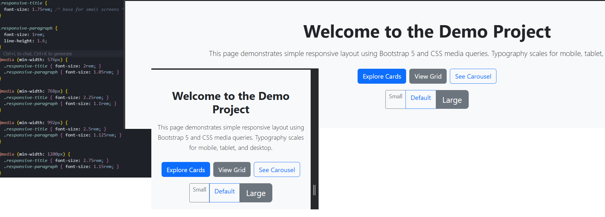
Task 2 — CSS‑only Card Group
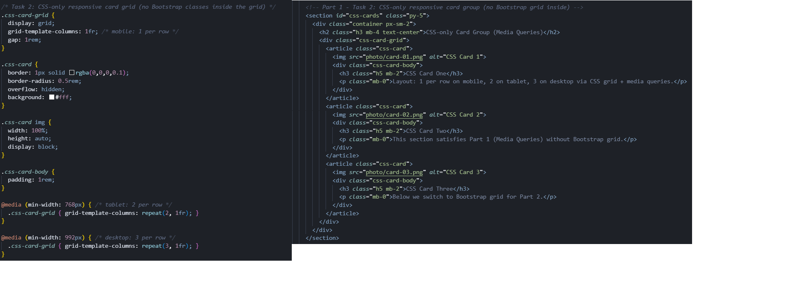
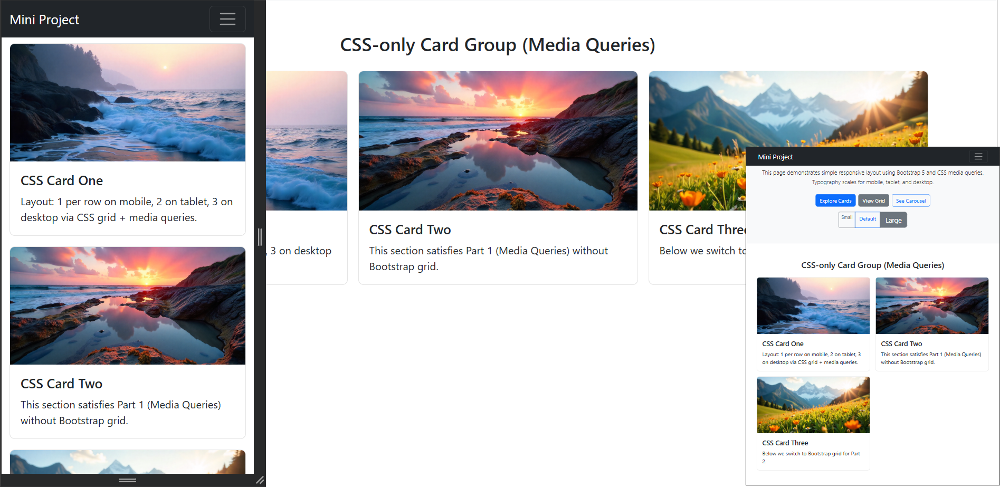
Task 3 — Bootstrap Grid
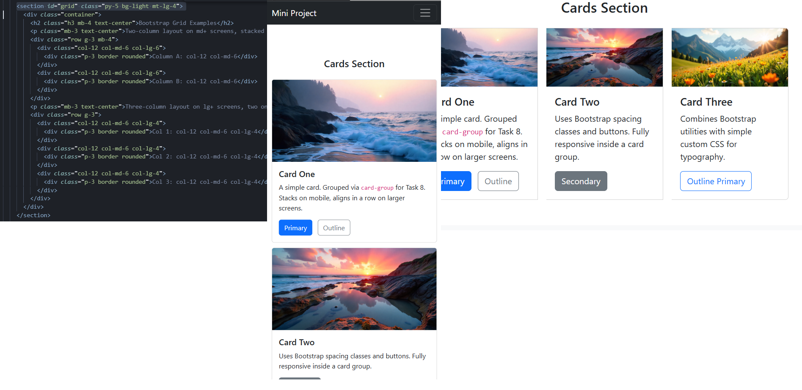
Task 4 — Spacing Utilities
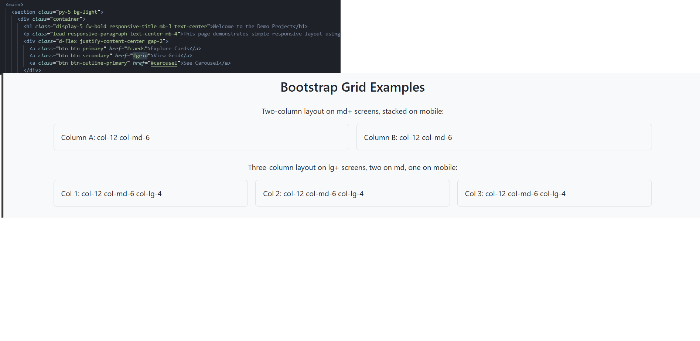
Task 5 — Navbar
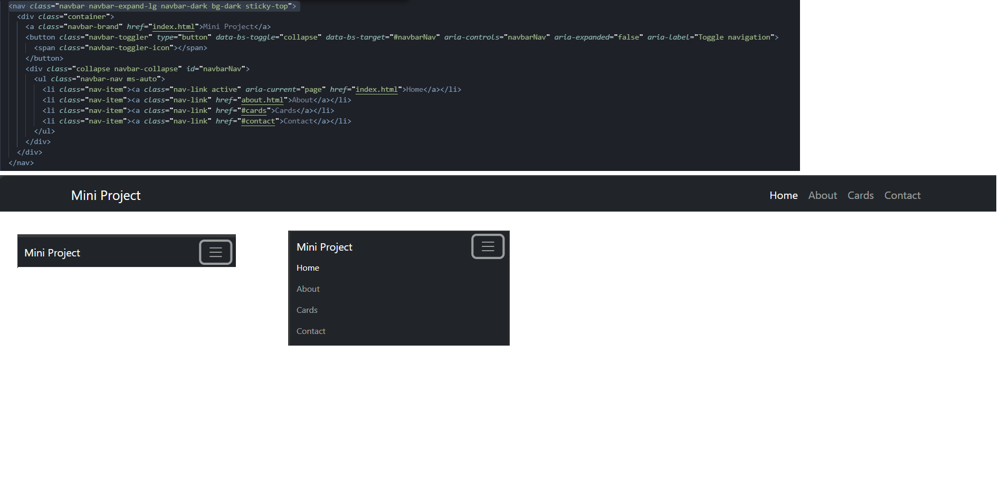
Task 6 — Buttons
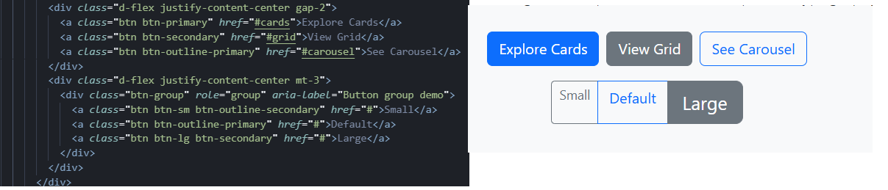
Task 7 — Carousel
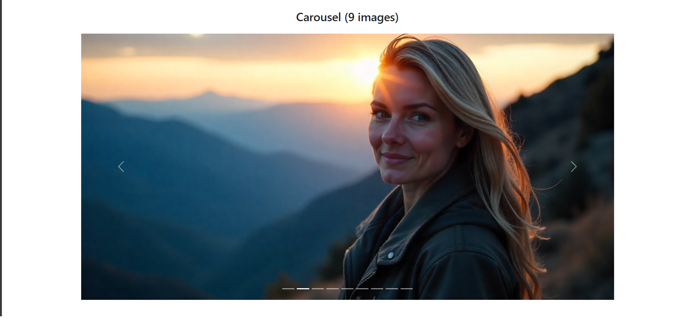
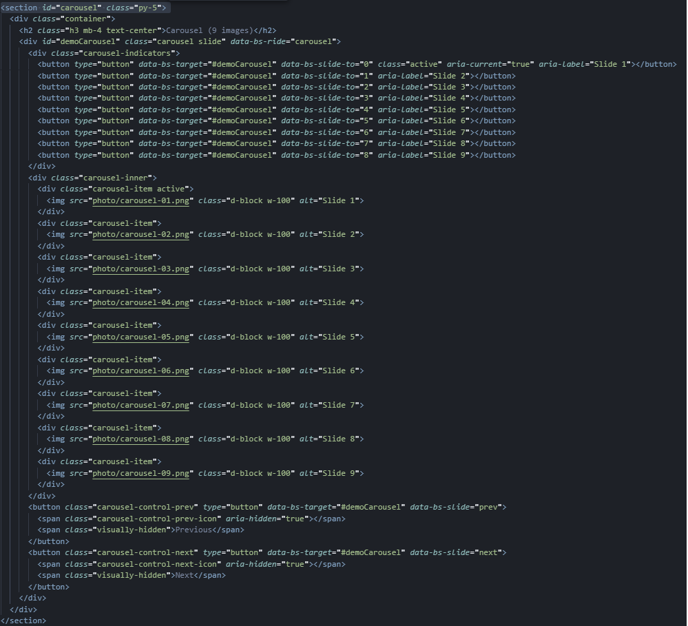
Task 8 — Bootstrap Cards
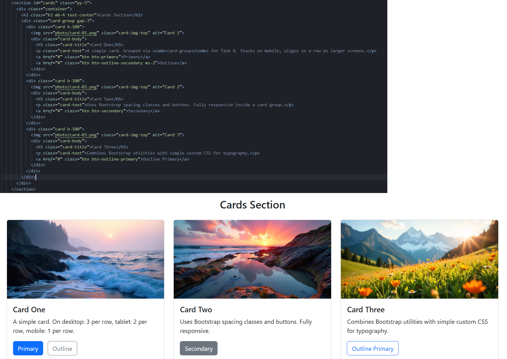
Task 9 — Responsive Form
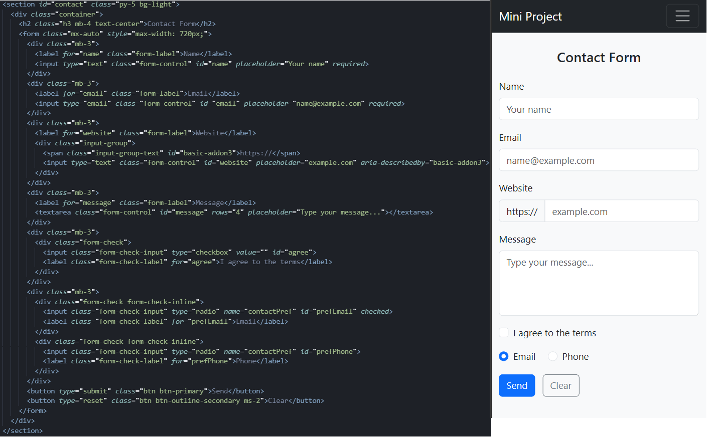
Task 10 — Accessibility
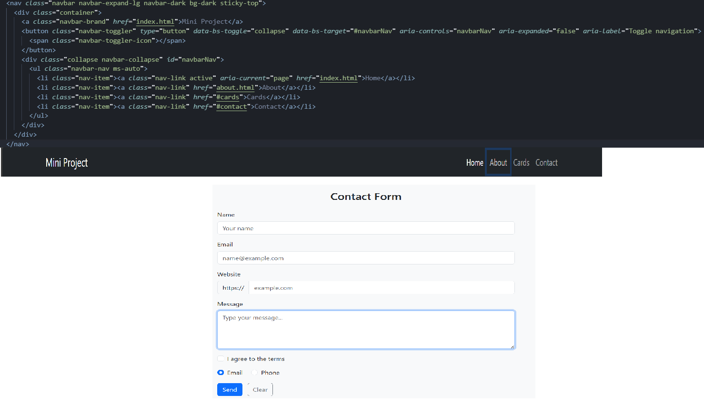
Deployed URL
Conclusion
The project meets all assignment requirements. Media queries ensure readable typography on different devices. Bootstrap grid and components provide a clean, responsive layout while keeping the code concise and maintainable.